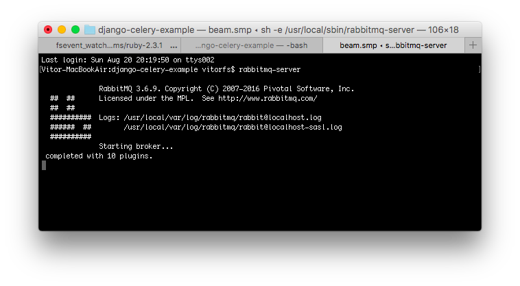
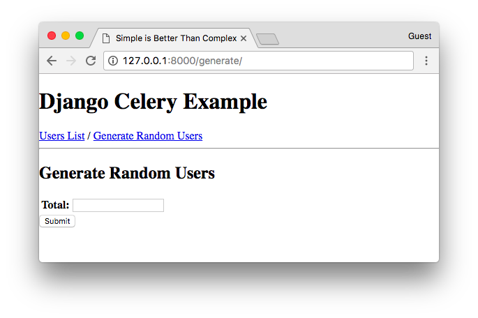
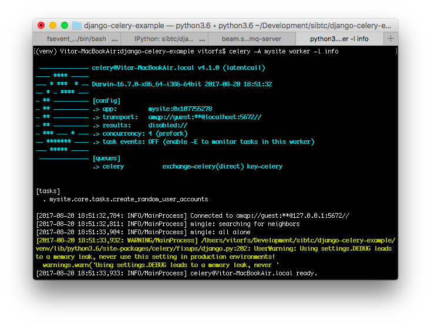
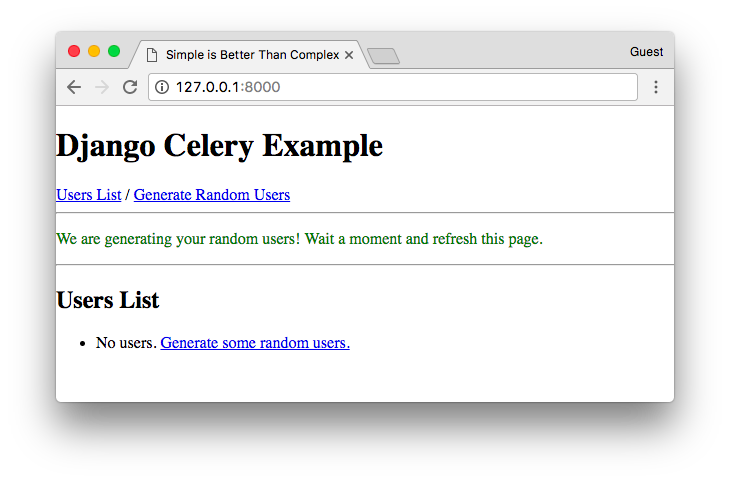
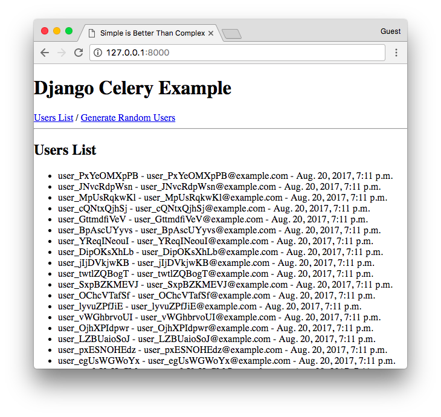

(Picture:
(Picture: Celery is an asynchronous task queue based on distributed message passing. Task queues are used as a strategy to distribute the workload between threads/machines. In this tutorial I will explain how to install and setup Celery + RabbitMQ to execute asynchronous in a Django application.
To work with Celery, we also need to install RabbitMQ because Celery requires an external solution to send and receive messages. Those solutions are called message brokers. Currently, Celery supports RabbitMQ, Redis, and Amazon SQS as message broker solutions.
Table of Contents
- Why Should I Use Celery?
- Installation
- Celery Basic Setup
- Creating Our First Celery Task
- Starting The Worker Process
- Managing The Worker Process in Production with Supervisord
- Further Reading
Why Should I Use Celery?
Web applications works with request and response cycles. When the user access a certain URL of your application the Web browser send a request to your server. Django receive this request and do something with it. Usually it involves executing queries in the database, processing data. While Django does his thing and process the request, the user have to wait. When Django finalize its job processing the request, it sends back a response to the user who finally will see something.
Ideally this request and response cycle should be fast, otherwise we would leave the user waiting for way too long. And even worse, our Web server can only serve a certain number of users at a time. So, if this process is slow, it can limit the amount of pages your application can serve at a time.
For the most part we can work around this issue using cache, optimizing database queries, and so on. But there are some cases that theres no other option: the heavy work have to be done. A report page, export of big amount of data, video/image processing are a few examples of cases where you may want to use Celery.
We don’t use Celery through the whole project, but only for specific tasks that are time-consuming. The idea here is to respond to the user as quick as possible, and pass the time-consuming tasks to the queue so to be executed in the background, and always keep the server ready to respond to new requests.
Installation
The easiest way to install Celery is using pip:
pip install CeleryNow we have to install RabbitMQ.
Installing RabbitMQ on Ubuntu 16.04
To install it on a newer Ubuntu version is very straightforward:
apt-get install -y erlang
apt-get install rabbitmq-serverThen enable and start the RabbitMQ service:
systemctl enable rabbitmq-server
systemctl start rabbitmq-serverCheck the status to make sure everything is running smooth:
systemctl status rabbitmq-serverInstalling RabbitMQ on Mac
Homebrew is the most straightforward option:
brew install rabbitmqThe RabbitMQ scripts are installed into /usr/local/sbin. You can add it to your .bash_profile or .profile.
vim ~/.bash_profileThen add it to the bottom of the file:
export PATH=$PATH:/usr/local/sbinRestart the terminal to make sure the changes are in effect.
Now you can start the RabbitMQ server using the following command:
rabbitmq-server
Installing RabbitMQ on Windows and Other OSs
Unfortunately I don’t have access to a Windows computer to try things out, but you can find the installation guide for Windows on RabbitMQ’s Website.
For other operating systems, check the Downloading and Installing RabbitMQ on their Website.
Celery Basic Setup
First, consider the following Django project named mysite with an app named core:
mysite/
|-- mysite/
| |-- core/
| | |-- migrations/
| | |-- templates/
| | |-- apps.py
| | |-- models.py
| | +-- views.py
| |-- templates/
| |-- __init__.py
| |-- settings.py
| |-- urls.py
| +-- wsgi.py
|-- manage.py
+-- requirements.txtAdd the CELERY_BROKER_URL configuration to the settings.py file:
settings.py
CELERY_BROKER_URL = 'amqp://localhost'Alongside with the settings.py and urls.py files, let’s create a new file named celery.py.
celery.py
import os
from celery import Celery
os.environ.setdefault('DJANGO_SETTINGS_MODULE', 'mysite.settings')
app = Celery('mysite')
app.config_from_object('django.conf:settings', namespace='CELERY')
app.autodiscover_tasks()Now edit the __init__.py file in the project root:
__init__.py
from .celery import app as celery_app
__all__ = ['celery_app']This will make sure our Celery app is important every time Django starts.
Creating Our First Celery Task
We can create a file named tasks.py inside a Django app and put all our Celery tasks into this file. The Celery app
we created in the project root will collect all tasks defined across all Django apps listed in the INSTALLED_APPS
configuration.
Just for testing purpose, let’s create a Celery task that generates a number of random User accounts.
core/tasks.py
import string
from django.contrib.auth.models import User
from django.utils.crypto import get_random_string
from celery import shared_task
@shared_task
def create_random_user_accounts(total):
for i in range(total):
username = 'user_{}'.format(get_random_string(10, string.ascii_letters))
email = '{}@example.com'.format(username)
password = get_random_string(50)
User.objects.create_user(username=username, email=email, password=password)
return '{} random users created with success!'.format(total)The important bits here are:
from celery import shared_task
@shared_task
def name_of_your_function(optional_param):
pass # do something heavyThen I defined a form and a view to process my Celery task:
forms.py
from django import forms
from django.core.validators import MinValueValidator, MaxValueValidator
class GenerateRandomUserForm(forms.Form):
total = forms.IntegerField(
validators=[
MinValueValidator(50),
MaxValueValidator(500)
]
)This form expects a positive integer field between 50 and 500. It looks like this:

Then my view:
views.py
from django.contrib.auth.models import User
from django.contrib import messages
from django.views.generic.edit import FormView
from django.shortcuts import redirect
from .forms import GenerateRandomUserForm
from .tasks import create_random_user_accounts
class GenerateRandomUserView(FormView):
template_name = 'core/generate_random_users.html'
form_class = GenerateRandomUserForm
def form_valid(self, form):
total = form.cleaned_data.get('total')
create_random_user_accounts.delay(total)
messages.success(self.request, 'We are generating your random users! Wait a moment and refresh this page.')
return redirect('users_list')The important bit is here:
create_random_user_accounts.delay(total)Instead of calling the create_random_user_accounts directly, I’m calling create_random_user_accounts.delay(). This
way we are instructing Celery to execute this function in the background.
Then Django keep processing my view GenerateRandomUserView and returns smoothly to the user.
But before you try it, check the next section to learn how to start the Celery worker process.
Starting The Worker Process
Open a new terminal tab, and run the following command:
celery -A mysite worker -l infoChange mysite to the name of your project. The result is something like this:

Now we can test it. I submitted 500 in my form to create 500 random users.
The response is immediate:

Meanwhile, checking the Celery Worker Process:
[2017-08-20 19:11:17,485: INFO/MainProcess] Received task:
mysite.core.tasks.create_random_user_accounts[8799cfbd-deae-41aa-afac-95ed4cc859b0]Then after a few seconds, if we refresh the page, the users are there:

If we check the Celery Worker Process again, we can see it completed the execution:
[2017-08-20 19:11:45,721: INFO/ForkPoolWorker-2] Task
mysite.core.tasks.create_random_user_accounts[8799cfbd-deae-41aa-afac-95ed4cc859b0] succeeded in
28.225658523035236s: '500 random users created with success!'Managing The Worker Process in Production with Supervisord
If you are deploying your application to a VPS like DigitalOcean you will want to run the worker process in the background. In my tutorials I like to use Supervisord to manage the Gunicorn workers, so it’s usually a nice fit with Celery.
First install it (on Ubuntu):
sudo apt-get install supervisorThen create a file named mysite-celery.conf in the folder: /etc/supervisor/conf.d/mysite-celery.conf:
[program:mysite-celery]
command=/home/mysite/bin/celery worker -A mysite --loglevel=INFO
directory=/home/mysite/mysite
user=nobody
numprocs=1
stdout_logfile=/home/mysite/logs/celery.log
stderr_logfile=/home/mysite/logs/celery.log
autostart=true
autorestart=true
startsecs=10
; Need to wait for currently executing tasks to finish at shutdown.
; Increase this if you have very long running tasks.
stopwaitsecs = 600
stopasgroup=true
; Set Celery priority higher than default (999)
; so, if rabbitmq is supervised, it will start first.
priority=1000In the example below, I’m considering my Django project is inside a virtual environment. The path to my virtual environment is /home/mysite/.
Now reread the configuration and add the new process:
sudo supervisorctl reread
sudo supervisorctl updateIf you are not familiar with deploying Django to a production server and working with Supervisord, maybe this part will make more sense if you check this post from the blog: How to Deploy a Django Application to Digital Ocean.
Further Reading
Those are the basic steps. I hope this helped you to get started with Celery. I will leave here a few useful references to keep learning about Celery:
And as usual, the code examples used in this tutorial is available on GitHub:
github.com/sibtc/django-celery-example
Referral Link
If you want to try this setup in a Ubuntu cloud server, you can use this referral link to get a $10 free credit from Digital Ocean.
 How to Create Custom Django Management Commands
How to Create Custom Django Management Commands
 How to Extend Django User Model
How to Extend Django User Model
 How to Setup a SSL Certificate on Nginx for a Django Application
How to Setup a SSL Certificate on Nginx for a Django Application
 How to Deploy a Django Application to Digital Ocean
How to Deploy a Django Application to Digital Ocean